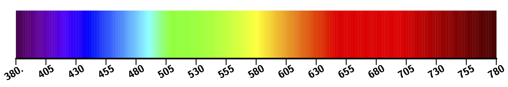
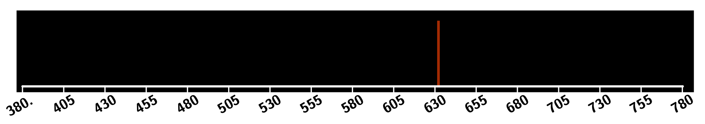
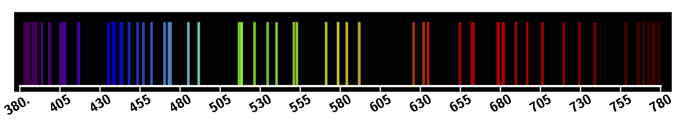
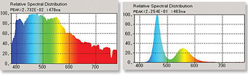

Spectre d’une lumière
Spectre de couleur d’une lumière
- On appelle spectre de couleur d’une lumière le résultat de l’analyse de cette lumière par un spectroscope (ou spectromètre).
- Un spectroscope, composé de prismes, dévie différemment les différentes radiations de la lumière en fonction de leur longueur d’onde car l’indice de réfraction d’un milieu transparent homogène est différent pour chacune de ces radiations.
Spectre de la lumière blanche
- Le spectre de la lumière blanche est composé de toutes les couleurs de l’arc-en-ciel ;
- Le spectre est continu : toutes les radiations sont présentes entre le rouge et le violet ;

La lumière blanche est une lumière polychromatique, elle est composée d’une infinité de radiations (d’ondes électromagnétiques sinusoïdales) de longueurs d’ondes différentes.
Spectre de la lumière d’un laser hélium-néon
- La lumière produite par un laser hélium-néon est constituée d’une seule radiation de longueur d’onde $\pu{632 nm}$. Cette lumière est rouge.
- Le spectre est un spectre de raies : une ou plusieurs raies colorées se détachent sur un fond sombre.

La lumière du laser hélium-néon est une lumière monochromatique, elle est composée d’une seule radiation.
Spectre du magnésium
- La lumière émise par du magnésium est constituée de nombreuses radiations dont les raies s’étalent sur tout l’intervalle du visible. Cette lumière est blanche.
- Le spectre est un spectre de raies.

La lumière émise par du magnésium est une lumière polychromatique, elle est composée de plusieurs radiations de longueurs d’ondes différentes.
Distribution spectrale de la lumière
- Connaître les radiations qui composent une lumière est insuffisant ; il est aussi nécessaire de déterminer l’intensité de chacune de ces radiations. On utilise dans ce but un spectrophotomètre.
- Une distribution spectrale est un diagramme représentant l’intensité lumineuse en fonction de la fréquence ou de la longueur d’onde des radiations composant la lumière

Couleur perçue et couleur spectrale
Couleur perçue
- Les deux distributions spectrales sont issues de l’analyse de des lumières émises par le Soleil et par une LED.
- Ces deux lumières sont perçues comme pratiquement identiques, elles laissent la même impression aux personnes qu’elles éclairent.

La couleur perçue d’une lumière est l’impression visuelle qu’elle nous laisse. Ce n’est pas une propriété intrinsèque de la lumière.
Couleur spectrale
On appelle couleur spectrale, la couleur de la radiation monochromatique présente dans le spectre de la lumière blanche, qui laisse la même impression de couleur que la couleur perçue.
- À toute couleur spectrale correspond une couleur perçue.
- Toute couleur perçue ne correspond pas forcément à une couleur spectrale (le magenta, le marron par exemple).
Synthèse additive des couleurs
Pourquoi perçoit-on des couleurs autres que le rouge, le vert et le bleu ?
- Lorsqu’un cône reçoit de la lumière il produit un signal électrochimique en rapport avec la quantité de lumière absorbée.
- Comme chaque cône est sensible à un large intervalle de longueurs d’ondes qui se chevauchent, toute lumière, même monochromatique, peut exciter plusieurs cônes.
Une radiation, même monochromatique (couleur spectrale), peut exciter les trois cônes.
Exemple
Le spectre de gauche est celui d’une lumière polychromatique, formée d’une radiation « rouge » et d’une radiation « bleu ». Le spectre de droite est celui d’une lumière monochromatique, formée d’une radiation « jaune ». Ces deux lumières génèrent la même sensation au niveau du cerveau.
[Lire]